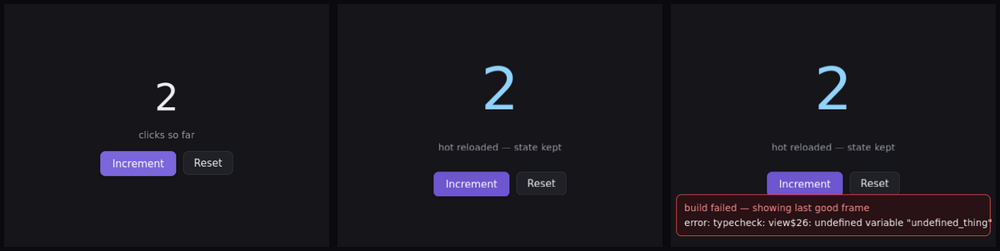

Hot reload that keeps state
Save a file and the running window redraws with the new code — same window, same size, same state. A broken edit never blanks the window.

Left: running, clicked twice. Middle: font size, color, caption and gap changed while running — still 2. Right: a typo, drawn over the last good frame.
What happens on save
mdk devnotices a changed.src(app or framework; polled every 250 ms).- It runs
machin encodeover the framework and app files — this is where machin typechecks. machin build --emit-cemits C;cc -shared -fPIC -std=c11compiles it tobuild/<app>.so.tmp, then an atomic rename publishes it. Typically 0.5–1 s.- The host sees the new mtime, copies the file to a unique
/tmp/mdk-<pid>-<n>.so,dlopens it and switches its frame pointer to the newmdk_frame. 0.3 ms. - The next frame runs the new view against the same window, the same state store and last frame's layout.
The old module is never dlclosed — machin's runtime may hold statics or threads — so each reload costs the size of the module (tens of KB) for the session. Release builds contain none of this.
What survives a reload
| survives | resets |
|---|---|
| the window, its size and position, the GL context, the glyph atlas and shaping cache | MFL globals (var x = …) — they belong to the module |
everything in the state store: state_int/set_int, state_f/set_f, state_str/set_str | anything a module allocated (it is still mapped, just unused) |
| last frame's laid-out rects — hover and press keep working across the swap |
The arena rule
The framework's exported entry point wraps your view in machin's arena { }:
export func mdk_frame() {
arena {
ui_begin()
view()
ui_end()
}
}Everything a frame allocates — strings from str(), concatenations, slices — is freed when the frame returns. Without it, a function called from a C loop keeps every allocation until the process exits: in testing, 1.6 GB after 200,000 frames; with the arena, flat at 1.6 MB.
This is also why the framework keeps its element tree in host-owned raw memory (peek/poke) rather than MFL slices: zero allocation per frame. See internals.
The error overlay
If machin encode or the C compiler rejects an edit, mdk dev writes the diagnostics to build/<app>.so.err and keeps the old module. The host draws that file over the last good frame — rounded red panel, first lines of the error. Fix the edit and the next successful build deletes the file; the overlay disappears with state intact.
view() never calls does not fail the build, so it shows no overlay — until you call it.Limits
- Changing the shape of the state you store is up to you: the store is keyed by string, so renaming a key starts it from its default.
- The host (
host/host.c) is not reloaded; changing it needs a restart ofmdk dev(it rebuilds itself automatically). - Linux today; the same mechanism maps to
dlopenon macOS andLoadLibraryon Windows (milestone 4).
Next: benchmarks →